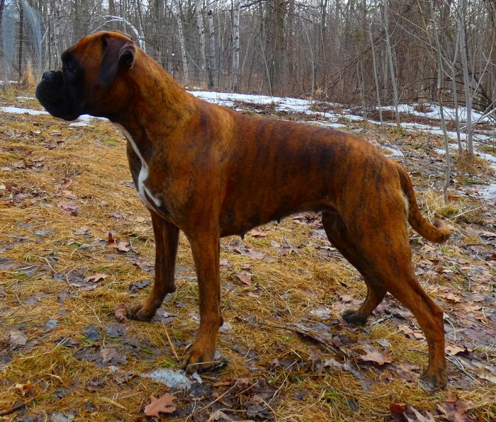
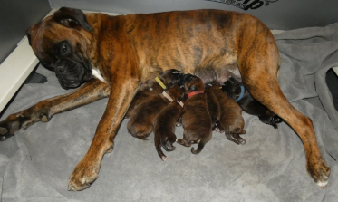
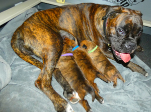
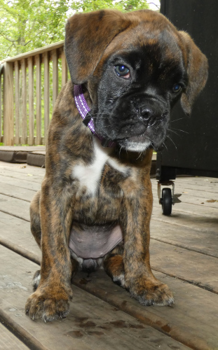
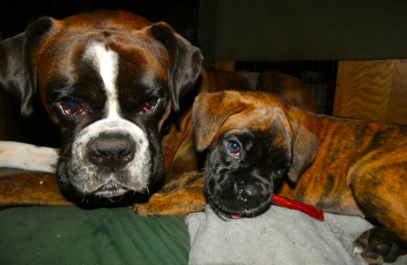
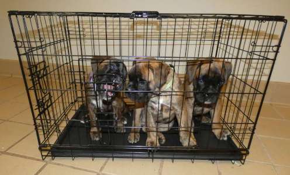
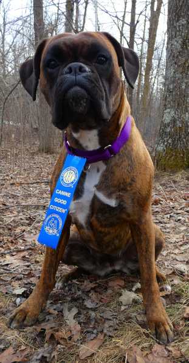

Aurora vom Norden, CGC

Aurora is a tough, hard Boxer girl very much like her mother Jibaya. She learns quickly and works hard, always excited about learning new things. She is very active and energetic and stays close to me always. She's always happy, tail rarely stops wagging, body rarely stops bouncing for long.
Aurora was born on May 8, 2024, has an OFA Normal heart, OFA Good hips, is DM and ARVC clear and has tested as heterozygous brindle, meaning she has one allele for the dominant brindle color as well as a recessive fawn allele, so if bred to a male who also has at least one fawn allele she can have fawn offspring as well as brindle. She weighs 73 pounds. She earned the Canine Good Citizen (CGC) title on March 21, 2026 while pregnant with her first litter by Ivo vom Hafen, is currently starting to do some light Agility work, should have a Trick Dog Novice (TKN) title soon with more Agility and IPO in her future. Aurora gave birth to her first litter of 7 healthy brindle puppies, 5 boys and 2 girls, on April 28.
- Ivo x Aurora litter 8 days old

- Cliff x Jibaya litter 10 days old (Aurora purple collar)

- 7.5 weeks old

- 7.5 weeks old chewing on bully stick with Indy supervising

- 8 weeks old at vet for wellness exams, Aurora far left trying to bite her way out of crate

- March 21, 2026 after earning her CGC title

Puppy fight, 7.5 weeks old, Aurora purple collar: